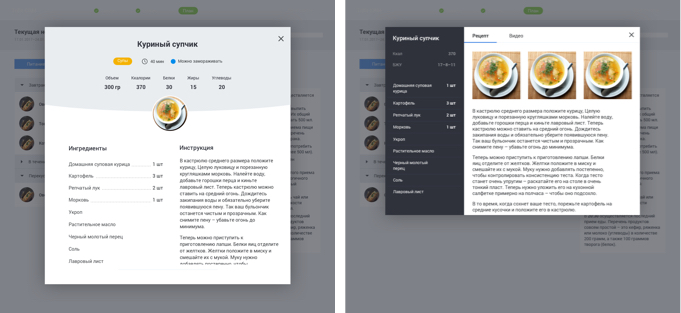

Trifit
Трифит — это сеть студий персонального тренинга. Для них нужно было разработать онлайн платформу, которая позволила бы тренерам работать с клиентами удаленно. Так появилась онлайн программа тренировок и питания — TRIFIT 21DAY.
Проект выполнялся по методологии OOUX и мне нужно было расписать все объекты системы и их характеристики. На гитхабе можно посмотреть весь список объектов.
Дальше в соответствии с объектной моделью системы я составила список всех экранов:
Работа над интерфейсом
Проектирование рецепта 
Верстка экранов
А здесь можно найти все экраны, которые я сверстала.